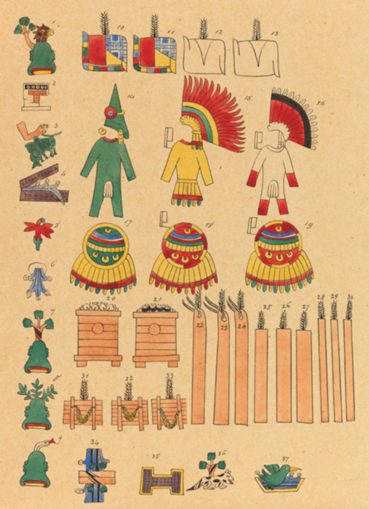

The Boat
The First Book

The Tomato

The Second Book

The Building

The Map
The Pasta

The Third Book
The Boat
The boat in the painting signifies the impact of the Columbian exchange on Italy’s foodscape. As
explained by Nunn and Qian, the Columbian exchange was “the exchange of diseases, ideas, food,
crops and populations between the New World and the Old world.”[3] The Old World
referring to Eastern Hemisphere, namely Europe, and the New World referring to the Americas. The
Columbian exchange brought many new crops to Europe, including maize, potatoes, sweet potatoes,
tomatoes, cassava, cacao beans, pineapples, chili peppers and tobacco.[4] Though the
Columbian exchange brought many new crops between the ‘Old world’ and the ‘New,’ it was also
devastating for the indigenous people of the Americas due to diseases and colonisation, and was
the driving force behind American chattel slavery.[5]

Theordor de Bry[6]
These plates made by Theodor de Bry depict the food and farming of Native Americans. The plates
portray the native Americans as having an abundance of food and shows their farming technique.
The portrayal is glamourised, with the interactions between the Native Americans and the Spanish
with the Native American women being depicted as venus-esque with long flowing hair. The text,
translated by google, describes the second voyage to the Americas, whereupon the voyagers were
met by a Native American King, who bestowed them gifts and indicated “every kind of display of
civility.”[7] This account and the nature of the images casts the Columbian exchange
in the light of a mutual, friendly exchange of goods, rather than a catalyst of disease,
genocide and slavery, with an estimated decrease of 80-95% of the Native American population
within 150 years of 1492.[8] In this codex by Agostino Aglio, the prominence of Maize
in the Native American culture is highlighted, showing the importance of the Maize crop.

Codex by Agostino, 1830[9]
In this codex by Agostino Aglio, the prominence of Maize in the Native
American culture is highlighted, showing the importance of the Maize crop.
3. Nathan Nunn and Nancy Qian, “The Columbian Exchange: A History of Disease, Food, and Ideas,” Journal of Economic Perspectives 24, no. 2 (2010): 163.
4. Nunn and Qian, “The Columbian Exchange,” 168.
5. Nunn and Qian, “The Columbian Exchange,” 164.
6. Theodor de Bry, India Occidentalis, 1590, printed plate in book, Newberry, Internet Archive, https://archive.org/details/nby_427707.
7. De Bry, India Occidentalis.
8. Nunn and Qian, “The Columbian Exchange,” 165.
9. Agostino Aglio, Thirteen cities paying tribute to Aztecs, 1830, codex, Digital Public Library of America, https://dp.la/primary-source-sets/the-columbian-exchange/sources/1573.
The Tomato
The tomato appears in the painting as an example of the impact of food from the Americas on
Italian cuisine. Though other influential foods such as the potato and eggplant came to
Europe had massive impacts, for Italian cuisine, none were so influential as the Tomato. The
focus on the tomato in my research is partly due to its symbolism in representing all foods
brought by the Columbian Exchange, but mostly it is to highlight the tremendous impact that
one element can have on an entire culture. The tomato is synonymous with Italian food
throughout the world today, and its journey onto the plate of Italy is intrinsically linked
with the evolution of Italian cuisine into what it is today.
Though the tomato was known to be in Italy as early as 1548, it was not
widely consumed for around three hundred years after its initial debut.[10] One
reason the tomato did not catch on in popularity is its association with the belladonna
plant, with people believing it to be poisonous. Tomatoes were described by Pietro Antonio
Michiel, a 1500s Venetian botanist as “dangerous and harmful” and causing “eye diseases and
headaches” and was “thought to have potent magical and hallucinatory powers.”[11]
Vegetables in general were seen with distrust at this time in Italy, they “were always
vilified, as they got trapped in the body’s membranes and putrefied.”[12]
The tomato slowly grew in popularity, with it appearing in a 1759 survey as “among the
fruits prized by men as foodstuffs or as condiments.”[13] Though the tomato
gained traction, it stayed mostly rural at the time. In the 1790s, the tomato was localised
to mostly southern coastal areas and the islands Sardinia and Sicily, which had Spanish
influence, as Spain more readily adopted the tomato into their cuisine.[14] By
the early 1800s, however tomatoes had spread in popularity to be “cultivated in all market
and kitchen gardens.”[15] Thus, tomatoes came to be one of the most influential
and pivotal foods in Italian cuisine. Their journey showcases the immense amount of change
that Italy underwent in both culture and cuisine.
10. Gentilcore, Pomodoro!, 2.
11. Gentilcore, Pomodoro!, 11-12.
12. Gentilcore, Pomodoro!, 28.
13. Gentilcore, Pomodoro!, 45.
14. Gentilcore, Pomodoro!, 62.
15. Gentilcore, Pomodoro!, 63.
The Building
The building in the painting is from the Botanical Gardens and Museum in Pisa, which was founded
by Botanist Luca Ghini and supported by Cosimo I de Medici.[16] It is the first place
the Tomato was recorded to be in Italy in October 1548.[17] Medici was presented a
basket of “pomidoro” that had been sent to him. It was “the first time the strange new fruit was
given a name, anywhere in Europe.”[18] The gardens were also used to grow many new
species from the Columbian exchange, with “Cosimo attempt[ing] to import and acclimatize various
American Plants,”[19] and “Ghini enrich[ing] the garden with exotic
species.”[20] The gardens are likely the first place for Tomatoes to be grown in
Italy, and this, along with the other American plants, make the garden an extremely important
place for the evolution of Italian food through the infusion of crops from the ‘New World’.
16. Tinde Van Andel et al,. “Sixteenth-century tomatoes in Europe: who saw them, what did they look like, and where did they come from?,” PeerJ (2022): 5, https://doi.org/10.21203/rs.3.rs-715398/v1.
17. Gentilcore, Pomodoro!, 1.
18. Gentilcore, Pomodoro!, 1.
19. Andel et al., “Sixteenth-century tomatoes,” 5.
20. Andel et al., “Sixteenth-century tomatoes,” 5.
The Pasta
Saverio Della Gatta “Two works: Eating Spaghetti Outdoors and Priest on
a Walk” 180521
The bowl of pasta is included to celebrate Italy’s most ubiquitous dish. The red tomato
sauce
further establishes the bond between tomatoes and Italian cuisine and shows how something
can
grow in cultural significance. Pasta with a sauce of tomatoes can be seen as early as 1880s
Naples, where “for those who could afford it, tomatoes […] form the customary seasoning for
macaroni, and not a day goes by when they do not appear on the table of the middle
class.”[21] Pasta became a main feature of Italian cuisine in the middle ages and
“has emerged as the symbol of Italian culinary genius […] both in its national identity and
in
its regional diversity.”[22] Therefore, displaying pasta, particularly with the
now
standard tomato sauce, accentuates the significance of the dish in Italian cuisine, as well
as
its history and its adaptability, with all Italian regions having their own interpretation
of
the fundamental dish.
21. Gentilcore, Pomodoro!, 67-68.
22. Silvano Serventi, Françoise Sabban, and Antony Shugaar. “The Taste for Pasta.” In Pasta: The Story of a Universal Food, (Columbia University Press, 2002), 227.
The First Cookbook
The purpose of this project is to look at how a cuisine transforms and evolves. Though,
naturally, any and all culture will organically change and evolve over time; this project is
particularly interested in the dramatic overturn of Italian cuisine that happened from the
introduction of foods from the ‘New World’ to the time of unification and the political
ramifications of a unified cuisine. First, it was discussed how the tomato and its journey
from
the Americas symbolised a great time of change and a pivotal introduction of what is now a
staple of Italian food. Now, we shall discuss the impact of literature on Italian cuisine;
how
codifying and memorialising something as intangible and regional as an ever-evolving fare of
food, elevates it into a shared cultural consciousness. The act of creating a cookbook
solidifies cuisine at that point in time and prepares the foundation for the next step.
This brings us to Antonio Latini. Latini was a cook, steward, banquet manager, and
author.[23]
Published in 1692-1694, Latini’s book Lo Scalco Alla Moderna (The Modern Steward), is
particularly notable as it marks the transition of Italian food from “the earlier courtly
style
Italian cooking to the new French style that came to dominate European cooking during the
eighteenth century.”[24] Latini’s focus on “local ingredients and local
practices” as
well as “his
attempt to join local styles with international traditions,”[25] shows that
though
the French
influence was accelerating in the upper class Italian foodscape, a cuisine of its own was
beginning to emerge and be recorded.

Here is an image from Lo Scalco Alla Moderna, engraved by Francisco de
grado.[26]
This image
shows how Latini’s book was concerned not only with food, but also with the art of
hosting
and eating. His book dealt with cuisine in a very artistic manner.
23. Tommaso Astarita, “Introduction,” in Antonio Latini’s “The Modern Steward, or the Art of Preparing Banquets Well” A Complete English Translation, ed. Tommaso Astarita (Leeds: ARC Humanities Press, 2019), 1.
24. Astarita, “Introduction,” 2.
25. Astarita, “Introduction,” 2.
26. Francisco de Grado (engraved by) and Antonio Latini (written by), Lo Scalco alla Moderna, 1694, printed book with intaglio illustrations, 22.5 x 16.5 x 4.2 cm, The Met, https://www.metmuseum.org/art/collection/search/352981.
The Second Book

Portrait of Vincenzo Corrado[30]
The second cookbook displayed in the painting is representative of the works of Vincenzo
Corrado. Corrado first published his cookbook Il Cuoco Galante (The Gallant Cook)
in
1773.
Corrado’s cookbook was very successful and influential, having ten editions published
from
1773 to 1830.[27] In Corrado’s cookbook, he speaks about his desire to instil
a
more refined
and Italian way of cooking, and of how the Italian cuisine has been subsumed by
influence
from foreign lands. He credits Antonio Latini with trying to establish a more elegant
cuisine with his book, though remarks on how Italian cuisine is still lacking elegance,
delicacy and good taste. He writes “In recent times, there were some Italians who,
disgusted
by antiquity on this subject, tried to replace the old with a new, more gentle and
convincing [cuisine], in the matter of preparation and seasoning.”[28] He
also
speaks most
concernedly of Naples, where both he and Latini primarily resided. This ambition to
establish a more refined and Italian cuisine in both Naples and wider Italy, shows the
drive
to a more unified and culturally rich cuisine, rather than one overly influenced by
foreign
cultures.

Here are the excepts from Corrado’s book which have been translated and
discussed.[29] The translation was aided by Google, but was largely my own
understanding of the
Italian Language, therefore the quotes approximate what was said.
27. “Corrado, Il cuoco galante,” Parma E La Sua Storia, https://www.parmaelasuastoria.it/Corrado-Il-cuoco-galante.aspx.
28. Vincenzo Corrado, Il Cuoco Gallante, 4th ed. (Nicola Russo, 1792), 5-6.
29. Corrado, Il Cuoco Gallante, 5-6.
30. Portrait of Vincenzo Corrado, drawing, Fondazione Terra d’Otranto https://www.fondazioneterradotranto.it/tag/vincenzo-corrado/.
The Map
The map of Italy with the clear divide between north and south represents the strong
cultural,
linguistic, financial and political divide between north and south Italy both at the time
being
discussed and through to present day. These divides between regions are important to discuss
as
particularly due to cultural and linguistic divides, Italian cuisine was for a long time,
fragmented and somewhat isolated. As the goal of this project is to explore how major
political
and cultural events impact cuisine and vice versa, the fragmentation of Italy and the
subsequent
fragmentation of cuisine is pivotal in this discussion.
The divide between north and south Italy is self-evident, as stated by Huysseune “it would
be
absurd to deny regional differences within Italy, and the deep roots these differences have
in
history.”[31] The divide between north and south is certainly cultural, though
more
measurably, economic and political. Missiaia writes “Italy has been characterised,
throughout
its unitary history, by large regional differentials in income, level of industrialization,
and
development.”[32] The link between food and territory is discussed by Hibberd,
who
argues that “the rise of nationalist sentiment led to the formation of an Italian food
culture.”[33] Hibberd discusses the specific differences between the north and
south
cuisines, noting how “the south relies upon dried pasta whereas many of the famous dishes of
the
centre use fresh [and] in the north, rice and polenta have tended to serve the staple
function
taken be pasta across the rest of the country.”[34] Hibberd also speaks about how
the
reality of a multi-faceted, multi-cultural Italian cuisine is contrasted by the global
understanding of a more unified exported cultural image, stating “Italian national cuisine
sits
rather uneasily between global versions of popular Italian dishes and more autonomist
demands
that place emphasis on regional or local cuisines.”[35] Therefore, though this
project discusses Italian cuisine holistically, looking at great movements, impacts, and
consolidations, regional differences must be acknowledged, as well as how economic,
political
and linguistic differences play a role in the variation in Italian cuisine. However, this
project is concerned not only with the political and cultural impact upon food, but the
impact
of food on the political and cultural. This brings us to our next segment, Pellegrino Artusi
and
Unification through food.
Here is a map of 1838 pre-unification Italy,
showing the different regions and the
clear north south divide, one which was
never truly resolved.[36]
This map shows 1882 post-unification Italy. Though Italy is now
seemingly united, there are many divisions along cultural and economic lines which
prevail.[37]
31. Michel Huysseune. “Representations of Northern and Southern Italy,” in Modernity and Secession: The Social Sciences and the Political Discourse of the lega nord in Italy, 1st ed., (Berghahn Books, 2006), 125.
32. Anna Missiaia, “Where do we go from here? Market access and regional development in Italy (1871-1911),” European Review of Economic History 20, no. 2 (2016), 215.
33.
34.
35.
36.
37.
The Third Book
The third cookbook in the painting represents La scienza in cucina e l’arte di mangiar bene
(Science in the kitchen and the art of eating well) first published in 1891 By Pellegrino
Artusi. Artusi is an important figure to discuss for this subject as his work was explicitly
in
service of the development of a national identity through cuisine. Following the Italian
unification, or “Il Risorgimento” of 1861, Italy experienced many social and political
problems.
Helstosky writes “the 1890s in Italy were a decade of political conflict, food riots, the
founding of the Italian Socialist Party and the first year of
industrialisation.”[38]
A large problem with burgeoning Italy was facing was a distinct lack of a common cultural
identity. One of the most pivotal elements of this problem was the linguistic barriers of
the
time, as at the time of unification “less than 10% of the Italian population could speak the
national language”.[39] The inability for effective communication between regions
hampered the emergence of a national identity and, consequently, a national cuisine.
Pellegrino
Artusi was a nationalist and “advocated a national homogenisation of existing food
habits.”[40] His book, ‘Science in the Kitchen’ was written to “bring Italians
together through food consumption” and to “complem[ent] and bolst[er] the efforts of the
Italian
government to bring together disparate populations of citizens at a difficult
time.”[41]
Through his book, Pellegrino provided “a common language about the kinds of foods available
in
Italy and the ways in which Italians prepared them”42 Artusi did this by weaving
together traditional Italian with vernacular elements, giving people a practical language
through which to discuss food. Artusi “wanted to be understood by all Italians [and] to
provide
a kind of paternal mediation between Italian and various dialect traditions.”43
La
scienza in cucina “brought together and codified many dishes from the Italian peninsula,
turning
those dishes into a template of Italian national identity.”44 Artusi expressed
his
wish for his book to be accessible to all Italians, stating “with my manual, [..] one need
only
know how to hold a wooden spoon to work something out,”45 and expressing that “it
is
not for money, nor the pursuit of honor in an art that the unjust world wishes to appear to
revile, but in the conviction that I am doing something useful for the public, that I now
reprint.”46 It is also clear in his book how Artusi wished to honour the
differences
between regions while bringing them together, often comparing the techniques of different
regions.47 When first published, La scienza in cucina, contained 475 recipes.
However, by 1910, and its fourteenth edition, the book had 773 recipes, due to readers who
had
“mailed recipes and suggestions to Artusi, who added them to the collection.”48
This
shows Artusi’s dedication to making his tome as comprehensive and reflective of regional and
diverse Italian cuisine as possible, “the exchange of letters and the recipes [were] sent to
Artusi from every city in Italy.”49 Thus, a national culinary identity was
constructed within La scienza in cucina, and Italians were given the linguistic tools and
exposure necessary to begin to organically coalesce disparate regional fare into a cohesive
Italian cuisine, with Artusi’s “work […] now considered the canon for Italy.”50
38.
39.
40.
41.
42.
43.
44.
45.
46.
47.
48.
49.
50.